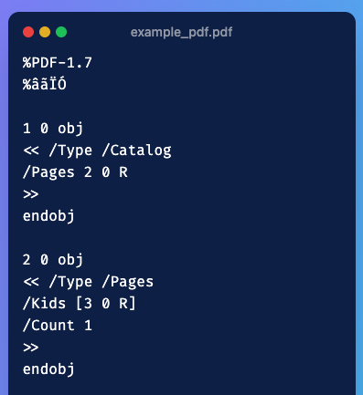

The goal of this blogpost is to explain what a PDF is internally and why parsing PDF files is not that easy.
Lately, I’ve been working on a project with a customer where the goal is to extract some specific information from PDF documents. To my big surprise, this task has proven to be quite challenging.
The main challenges stem from the following elements:
- Privacy concerns: using an external API to parse the PDFs was a no-go as the PDFs contained sensitive information.
- Complexity of the documents: the PDFs at hand contained a mix of text, complex tables, math formulas, all of which needed to be processed and understood in context.
- Absence of a clear structure: the lack of consistent formatting and structure across the documents made it difficult to apply standard parsing across the board.
What the hell is a PDF document ?
A first glimpse at a PDF file internal structure
Have you ever opened a PDF document with notepad or vscode instead of your preferred PDF reader ? If you do so , you’ll stumble upon something that looks like this :

Figure 1: Internal structure of a PDF document when viewed as raw text
If you’d like to see the full PDF internal structure, you can find the example PDF here.
PDF Page Description Language
To understand why PDFs are hard to parse, one must understand how a PDF file is built.
A PDF file is based on Page Description Language (PDL), which is a language used to describe the layout and appearance of a printed page. PDF PDL provides a standardized set of commands to reconstruct a page with perfect fidelity.
As a result, a PDF file is essentially a collection of instructions for rendering a page, rather than a linear sequence of text and images. If you look at the example pdf available in the github gist, you’ll see starting line 34 the following commands:
/F1 18 Tf
100 700 Td
(This is a PDF tutorial) TjWhat the following instructions do is:
/F1 18 Tf: set the font to F1 with size 18100 700 Td: move the text position to (100, 700)(This is a PDF tutorial) Tj: show the text string
Every PDF looks just like this; a precise sequence of commands that specify what to draw and exactly at what coordinates. It does not contain a semantic representation of its content. It does not state, “This is a paragraph that flows through two columns” or “this is a table”.
A table, for example, is just a grid of lines and text positioned at specific coordinates. There are no inherent relationships between the cells, no indication of headers or footers, and no understanding of the data contained within.
So when a parser sees what’s supposed to be a table, it sees just a bunch of lines and text. Its task (rather difficult task) is to infer the structure and relationships between these elements.
This lack of semantic structure makes it challenging to parse complex PDF documents.
The internal structure of a PDF
This is an optional part and will not help you in understanding the difficulty of parsing PDFs. So you can skip if you want to focus on the practical aspects of PDF parsing.
What you see in Figure 1 or in the gist file is the internal structure of a PDF document. Let us dive into the key components that make up this structure.
A PDF is composed internally of four sections:
Figure 2: Internal structure of a PDF document
The header
The header of a PDF file tells you about the PDF specifications version used to generate it. It is always the first line of the file and starts with the %PDF- marker. In Figure 1, it corresponds to %PDF-1.7.
The body
Now, the body is where you define the content of the PDF. Everything that you see when you open a PDF - the text you read, the images you view, the fonts that make the text look pretty - all of this is generated from the “objects” defined in the body.
Think about when you open a PDF and scroll through it. You might see different pages, each with its own layout, fonts, and content. Behind the scenes, each of these elements is stored as a separate object in the PDF body.
If you look at the PDF file in the gist, you’ll see that it contains 5 objects. Each object in a PDF is identified by a unique object number and a generation number (usually 0 for new objects).
The cross-reference table
Now, here’s where the magic happens that makes PDFs so fast to navigate. You know how you can instantly jump to page 50 of a 200-page PDF, or how quickly a PDF opens even when it’s a large file? That’s thanks to the cross-reference table (or “xref table”).
The xref table maps object numbers to their byte positions in the file. Here’s the one from our sample PDF:
xref
0 6
0000000000 65535 f
0000000017 00000 n
0000000070 00000 n
0000000126 00000 n
0000000281 00000 n
0000000385 00000 n Let me break this down:
xrefmarks the start of the cross-reference table0 6means this section covers 6 objects starting from object 0- Each line has three parts:
byte_offset generation_number n/f- Byte offset: The exact position in the file where the object starts (like a street address)
- Generation number: Usually 0 for active objects
- n/f flag:
nmeans the object is in use,fmeans it’s free (deleted)
The generation number and the n/f flag are useful when the PDF is modified.
For example, when you want to see the page content, the PDF reader looks up object 4 (content stream) in this table, sees it at byte position 281, jumps directly there, and gets the drawing commands. No searching, no scanning, just instant access.
This is why PDFs load so quickly even when they’re huge files. Your PDF viewer doesn’t have to read the whole document.
The trailer
Finally, we have the trailer - think of it as the PDF’s “instruction manual” that tells your PDF viewer how to get started. When you double-click a PDF file to open it, your PDF reader doesn’t start reading from the beginning. Instead, it jumps to the end of the file and reads the trailer first.
Here’s the trailer from our sample PDF:
trailer
<< /Size 6
/Root 1 0 R
>>
startxref
449
%%EOFHere’s what happens when you open a PDF:
/Size 6: The PDF reader learns there are 6 objects total in the cross-reference table/Root 1 0 R: “Start reading from the catalog object (object 1) to understand the document structure”startxref 449: “The cross-reference table starts at byte position 449”%%EOF: “This is truly the end of the file”
So when you open a PDF, here’s the process: 1. Your PDF reader jumps to the end and reads the trailer 2. From the trailer, it gets to know that the xref table is at position 449 and reads it to understand where all objects are 3. When you scroll or jump to a page, it uses the xref table to instantly find the right objects
This four-part structure (header, body, xref, trailer) is what makes PDFs very fast to read no matter their size.
Docling V2
Project context
So, here are the main constraints of the project: - It had some high privacy concerns. This means that using an external API for PDF parsing was not an option. - The PDFs were very complex. They contained a mix of text and really complex tables, math formulas, etc. - The customer preferred to run the workload of PDF parsing on their on-premise infrastructure that didn’t provide any GPU.
The point that was to our advantage is that the incoming documents didn’t need to be processed online. Batch processing of documents was sufficient, and we could afford to take our time with the parsing.
Why we went for Docling ?
The fast & good enough didn’t cut it!
While I used to go with PyMuPDF for PDF parsing because it’s easy to use, fast, and good enough for PDF with text and simple tables, it did a really bad job on the documents that we had to handle. The tables were very badly parsed.
To preserve the speed advantage, I decided to use a combination of PyMuPDF for the initial text extraction and a library dedicated to table extraction like tabula or camelot. Not only did this approach add more dependencies and more complexity, tabula and camelot both did a very bad job at extracting most tables.
Now, these packages look at the PDF instructions (like the ones shown in the PDL section) and try to reverse-engineer the layout of the document. While this makes for fast parsing, they have a hard time parsing a two-column layout accurately or a complex table. A good way to put it is that they have a hard time looking at things a human does.
camelot and tabula both rely on heuristics and rules that work well for simple well-structured tables.
ML-focused parsing
ML-focused parsing usually make use of: - a parsing engine to parse text - Some layout detection model to detect the different object in the page (e.g. headers, text blocks, images, tables, etc.) - Some table analysis model - Some post-processing steps to combine all the results together
We benchmarked unstructured and docling and found that docling was doing a better job at parsing the documents we had to handle.
Note: I didn’t test unstructured API which seems to offer more functionalities than the open-source package.
How does Docling work ?
Docling uses a combination of techniques to parse PDF documents effectively:
Text Extraction: Initially, it extracts text from the PDF using a fast and efficient text extraction engine.
Layout Detection: It employs a layout detection model to identify different elements on the page, such as titles, text, images, tables, etc.
Table Analysis: For detected tables, Docling uses a specialized table analysis model to understand the structure and content of the table cells.
OCR: Optionally, one can activate OCR if handling scanned documents.
Assembly: Finally, it applies post-processing steps to combine all the extracted information and present it in a structured format in
DoclingDocument.
The resulting object DoclingDocument is not a simple text string. It is a hierarchical representation of the original document, containing organized lists of items defined in Docling (TextItem, PictureItem, etc.). Each of these objects holds its content, coordinates, type, and relationships to other elements.
Please refer to the Docling documentation for more details on the structure and usage of DoclingDocument.
Parsing output
On top of the docling document that contains anything you can imagine, you can convert the docling document to a a simple string or to a markdown. You can also extract tables as pandas dataframes wich is really very handy.
Docling in practice
We used docling on french documents. A document made of more or less 60 pages, between 5 or 10 tables takes between 60 and 90 seconds using Docling.
As a parsing output
The things that didn’t work that well include: - tables that roll over two pages. In my experience, Docling considers them as separate tables - multicolumn text is rarely but sometimes is considered a table
Explore more with Docling!
- Docling can be used to parse many types of documents like powerpoint docs, word docs, html docs, PDFs and more.

- Docling is also designed to be used seamlessly with RAG and supports functionalities like chunking documents. - More recent packages in the docling family of packages are:
docling-serve: The FastAPI wrappers for running Docling as REST API and distribute large jobs.docling-sdg: Synthetic data generation (SDG) on documents for dataset generation for RAG, finetuning, etc.docling-mcp: The definition of tools with the Model Context Protocol for document conversion, manipulation and generation agents.
While I didn’t try these three packages, I’m looking forward to it.